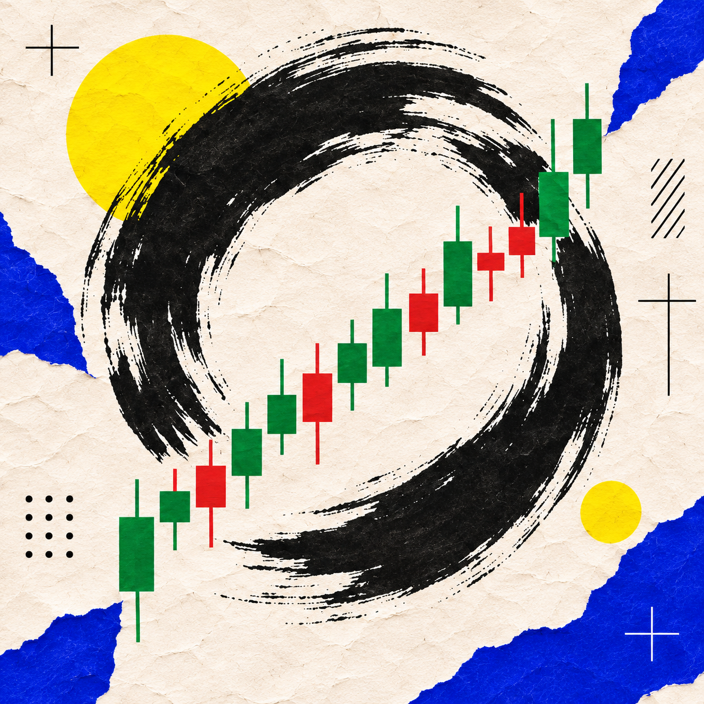

Lessons, decisions & deliberate practice
Back to the Dojo.
Your next rep starts here. Build your knowledge one lesson at a time.

RookieYour current rank
0 XPKnowledge earned
0 / 22Core lessons completed
Your first rank starts with your first knowledge check.
Up next / Instruments
Start with stocks.
Understand what you can trade before choosing how to trade.
Start learningLesson 1 of 5